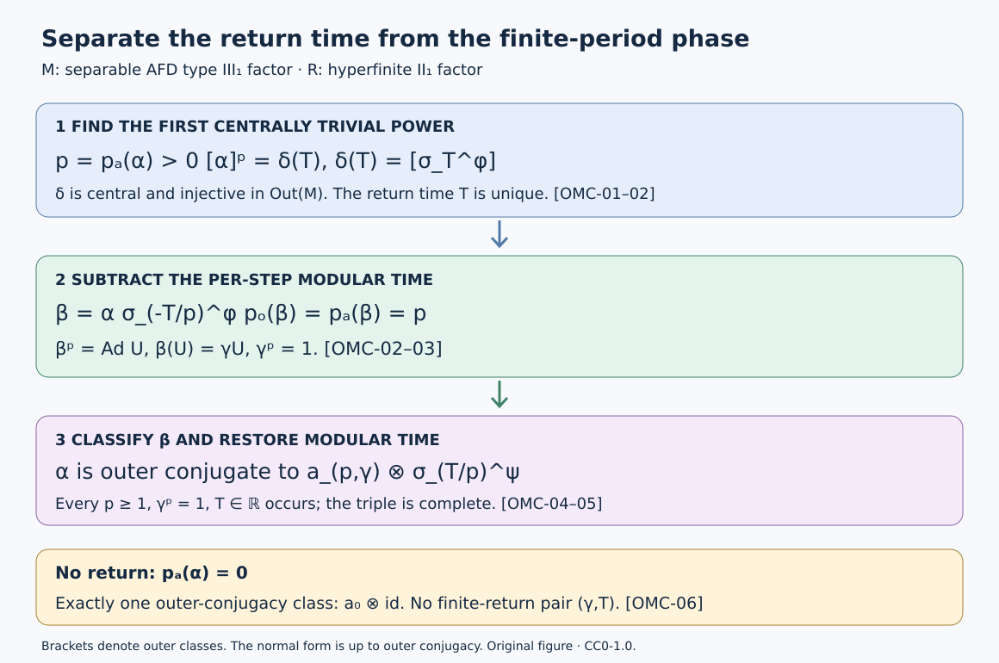

Outer conjugacy and modular invariants
An automorphism of the separable approximately finite-dimensional type \(\mathrm{III}_1\) factor has either no centrally trivial positive power, or three finite-return invariants: an integer \(p\geq1\), a real modular time \(T\), and a phase \(\gamma\) with \(\gamma^p=1\). We construct these invariants without choosing an invariant weight, prove that they classify outer conjugacy, and then recover the invariant-dominant-weight definition.
Throughout, \(M\) is that type \(\mathrm{III}_1\) factor and \(R\) is the hyperfinite \(\mathrm{II}_1\) factor with normalized trace \(\tau\). Maps between von Neumann algebras are normal. Composition is read from right to left. Outer conjugacy means conjugacy after an inner perturbation, allowing a specified normal isomorphism between the factors. The antecedents are Takesaki, Theory of Operator Algebras III, XVIII.4, Definition 4.34 and Theorem 4.35, printed pages 408–409. Every mathematical input used below has a named earlier programme proof; their recursive dependencies and review status remain separate.
Modular time embeds in the outer automorphism group
Write \(\operatorname{Out}(M)=\operatorname{Aut}(M)/\operatorname{Inn}(M)\). Fix a faithful normal state \(\varphi\), and put
\[ \delta(t)=[\sigma_t^\varphi]\quad(t\in\mathbb R). \tag{OMC.1} \]The constructed cocycle in Entry maps form relative flows gives, for any faithful normal semifinite weight \(\psi\),
\[ \sigma_t^\psi=\operatorname{Ad}c_t\,\sigma_t^\varphi. \tag{OMC.2} \]Thus (OMC.1) is independent of the weight. It is a group homomorphism because each modular group is an action. The normal transport formula Coordinate changes and positive scalar multiples says
\[ \theta\sigma_t^\varphi\theta^{-1} =\sigma_t^{\varphi\circ\theta^{-1}}. \tag{OMC.3} \]Equations (OMC.2)–(OMC.3) show that \(\delta(\mathbb R)\) is central in \(\operatorname{Out}(M)\). The same calculation proves its naturality under an isomorphism to another copy of \(M\).
Injectivity. The full model identification 11. The three-factor comparison and uniqueness identifies \(M\) with \(R_{1/2}\bar\otimes R_{1/3}\). Pairing coordinates presents its product state \(\rho\) as a stationary faithful \(M_4\)-product state. The centralizer irreducibility proof 2. Centralizer irreducibility by a block swap gives
\[ M_\rho'\cap M=\mathbb C1. \tag{OMC.4} \]If \(\sigma_t^\rho=\operatorname{Ad}u\), then \(u\) commutes with \(M_\rho\), since the modular automorphism fixes every element of the centralizer. Hence \(u\) is scalar and \(\sigma_t^\rho=\mathrm{id}\). The single-coordinate modular formula Tail expectations and the full commutant, applied to a matrix off-diagonal in each Powers leg, now implies
\[ t\log2\in2\pi\mathbb Z,\qquad t\log3\in2\pi\mathbb Z. \tag{OMC.5} \]If \(t\ne0\), their ratio makes \(\log2/\log3\) rational. Writing that positive rational as \(m/n\) would give \(2^n=3^m\), impossible by unique prime factorization. Thus \(t=0\). Equation (OMC.2) transfers this conclusion to every faithful weight. We have proved that \(\delta\) is injective, without importing a separate classification of modular periods.
The centrally trivial classification 7. Slice an implementer and finish the classification and modular central triviality 1. Central triviality and weighted sequence calculus therefore give an exact sequence of abstract groups
\[ 1\longrightarrow\operatorname{Inn}(M) \longrightarrow\operatorname{Cnt}(M) \mathop{\longrightarrow}^{\nu}\mathbb R \longrightarrow0. \tag{OMC.6} \]Here \(\nu(\eta)\) is the unique \(T\) with \([\eta]=\delta(T)\). Centrality of \(\delta\) proves additivity, conjugacy invariance, and the asserted kernel. No topological assertion about this exact sequence is needed.
For completeness, central triviality is stable under composition, inverse and conjugacy: a normal automorphism transports centralizing sequences to centralizing sequences by transporting their normal-functional tests, and preserves bounded strong-star convergence. Inner automorphisms are centrally trivial by the centralizing-sequence commutator criterion in CTM-01. Thus the quotient groups used here are defined.
Remove the modular drift before taking the phase
For \(\alpha\in\operatorname{Aut}(M)\), the set
\[ H_\alpha=\{k\in\mathbb Z:\alpha^k\in\operatorname{Cnt}(M)\} \tag{OMC.7} \]is a subgroup of \(\mathbb Z\). If it is nonzero, division with remainder by its least positive element proves \(H_\alpha=p\mathbb Z\) for a unique \(p\geq1\). Otherwise write \(p=0\). This is the asymptotic period \(p_a(\alpha)\); zero means that there is no positive return.
Suppose \(p>0\). Define
\[ T=\nu(\alpha^p),\qquad t=T/p,\qquad \beta=\alpha\sigma_{-t}^\varphi. \tag{OMC.8} \]The maps \(\alpha\) and \(\sigma^\varphi\) need not commute as automorphisms. They do commute modulo inner automorphisms by (OMC.3). Consequently
\[ [\beta]^p=[\alpha]^p\delta(-pt)=1. \tag{OMC.9} \]Thus \(\beta^p=\operatorname{Ad}U\) for some unitary \(U\). Moreover \(\alpha\) and \(\beta\) have the same image in \(\operatorname{Aut}(M)/\operatorname{Cnt}(M)\), since every modular time is centrally trivial. Hence \(p_a(\beta)=p\). If \(\beta^j\) were inner, it would be centrally trivial, so \(p\mid j\). Together with (OMC.9) this proves
\[ p_o(\beta)=p_a(\beta)=p. \tag{OMC.10} \]Commutation of \(\beta\) with its \(p\)-th power implies \(\operatorname{Ad}\beta(U)=\operatorname{Ad}U\). Factoriality gives a unique scalar \(\gamma\in\mathbb T\) with
\[ \beta(U)=\gamma U. \tag{OMC.11} \]Replacing \(U\) by a scalar multiple changes no phase. Iterating (OMC.11) \(p\) times gives \(\gamma^pU=\beta^p(U)=U\), so \(\gamma^p=1\). Define
\[ \operatorname{Ob}_m(\alpha)=(\gamma,T) \quad\text{when }p_a(\alpha)=p>0. \tag{OMC.12} \]In particular the modular coordinate records the return time of \(\alpha^p\), not the per-step time \(t=T/p\). For \(p=0\), no finite-return phase or modular time is assigned.
Independence and invariance
We first record the finite-period phase calculation, also proved in Finite outer period and obstruction, Proposition 1.1. Suppose \(\theta^p=\operatorname{Ad}U\), \(\theta(U)=\gamma U\), and \(\eta=\operatorname{Ad}v\,\theta\). Put \(v_p=v\theta(v)\cdots\theta^{p-1}(v)\). Multiplying the automorphisms gives
\[ \eta^p=\operatorname{Ad}(v_pU). \tag{OMC.13} \]Since \(\theta^p(v)=UvU^*\), a direct telescope gives
\[ \eta(v_pU)=\gamma v_pU. \tag{OMC.14} \]Inner perturbation preserves the first inner power because it leaves the outer class unchanged. Thus it preserves the obstruction. A normal conjugacy transports \(U\) and the equation \(\theta(U)=\gamma U\), and also preserves the phase.
Changing the weight in (OMC.8) changes the class of \(\beta\) by nothing, by (OMC.2). The two actual automorphisms therefore differ by an inner perturbation, so (OMC.13)–(OMC.14) prove weight independence of \(\gamma\).
If \(\alpha'=\operatorname{Ad}v\,\alpha\), its image in the quotient by \(\operatorname{Cnt}\) is unchanged; hence \(p\) is unchanged. Its \(p\)-th outer class is also unchanged, so injectivity of \(\delta\) preserves \(T\). Using the same reference state, \(\beta'=\operatorname{Ad}v\,\beta\), and the phase is unchanged.
For conjugacy by a normal isomorphism \(\theta\), transport the reference weight to \(\varphi\circ\theta^{-1}\). Formula (OMC.3) identifies the new untwisted automorphism exactly with \(\theta\beta\theta^{-1}\). Naturality and injectivity of \(\delta\) preserve \(T\); (OMC.14) preserves \(\gamma\). Returning to any other reference state changes nothing. Therefore \(p\), and for \(p>0\) the pair \((\gamma,T)\), are outer-conjugacy invariants.
There is also a concrete extension behind the definition. On \(\widetilde{\mathcal U}_\varphi=\mathcal U(M)\rtimes_{\sigma^\varphi}\mathbb R\), use
\[ (u,t)(v,s)=(u\sigma_t^\varphi(v),t+s). \tag{OMC.15} \]The map \((u,t)\mapsto\operatorname{Ad}u\,\sigma_t^\varphi\) is a surjective homomorphism onto \(\operatorname{Cnt}(M)\) by CTM-07. Its kernel is \(\{(\lambda1,0):\lambda\in\mathbb T\}\): injectivity of \(\delta\) first forces \(t=0\), and factoriality then makes \(u\) scalar. Projection onto \(t\) agrees with \(\nu\). These statements explain the scalar and real coordinates of the return invariant; they make no additional cohomological classification claim.
Finite return gives a complete normal form
The earlier finite cyclic classification, Theorem 5.1 proves the following at its stated hypotheses. On a strongly stable factor with separable predual, an approximately inner automorphism with \(p_o=p_a=p>0\) is outer conjugate to \(a_{p,\gamma}\otimes\mathrm{id}\) on \(R\bar\otimes M\), where \(a_{p,\gamma}\) has outer period \(p\) and obstruction \(\gamma\). Its complete proof first extracts exact cyclic clock-and-shift pairs, proves summable tensor splitting and the identity complement, and then cancels phases with the conjugate-phase model. We use that proved result.
All its hypotheses hold for \(\beta\) in (OMC.8). Strong stability is 6. A reference factor and tracial stability; separable predual is a standing hypothesis; approximate innerness of every automorphism is 7. Remove the distant action and finish the theorem; and (OMC.10) proves both period assertions. Therefore there exist a normal isomorphism \(\pi:R\bar\otimes M\to M\) and a unitary \(w\in M\) with
\[ \beta=\operatorname{Ad}w\,\pi A\pi^{-1}, \qquad A=a_{p,\gamma}\otimes\mathrm{id}_M. \tag{OMC.16} \]Fix any faithful normal state \(\psi\) on the second \(M\)-factor, and let \(\chi=\tau\otimes\psi\). The full tensor-weight and modular-group construction Tensor Hilbert algebras and Tomita domains gives \(\sigma_t^\chi=\mathrm{id}_R\otimes\sigma_t^\psi\). By KM-06 and BF-01, there is a unitary \(c\in R\bar\otimes M\) at the particular time \(t=T/p\) such that
\[ \pi^{-1}\sigma_t^\varphi\pi =\sigma_t^{\varphi\circ\pi} =\operatorname{Ad}c\,\sigma_t^\chi. \tag{OMC.17} \]Substitute (OMC.16)–(OMC.17) into the exact identity \(\alpha=\beta\sigma_t^\varphi\). Moving the inner factor through \(A\) gives
\[ \begin{split} \alpha&=\operatorname{Ad}\bigl(w\pi(A(c))\bigr)\\ &\qquad{}\circ\pi \bigl(a_{p,\gamma}\otimes\sigma_{T/p}^\psi\bigr) \pi^{-1}. \end{split} \tag{OMC.18} \]In particular the modular factor survives the transport. This proves existence of the finite-return normal form for every \(p>0\), including \(p=1\). The proof also works with a prescribed faithful normal semifinite weight \(\psi\), since BF-01, KM-06 and TG-04 have that scope.
Every allowed triple occurs
The construction and Fourier-coefficient proof in Finite outer period and obstruction, Section 4 and Theorem 4.2 give, for every \(p\geq1\) and \(\gamma^p=1\), an automorphism \(a=a_{p,\gamma}\) of \(R\) and a unitary \(V\in R\) such that
\[ p_o(a)=p,\qquad a^p=\operatorname{Ad}V,\qquad a(V)=\gamma V. \tag{OMC.19} \]The equality \(\operatorname{Cnt}(R)=\operatorname{Inn}(R)\) is proved in Centrally trivial automorphisms and decreasing AFD factors, Lemma 4.1 and Theorem 4.2. Hence \(p_a(a)=p\).
Let
\[ \zeta=a\otimes\sigma_{T/p}^\psi \quad\text{on }R\bar\otimes M. \tag{OMC.20} \]This algebra is isomorphic to \(M\) by UNI-06. With the faithful normal product state \(\chi=\tau\otimes\psi\), TG-04 gives
\[ \zeta^p=\operatorname{Ad}(V\otimes1)\,\sigma_T^\chi. \tag{OMC.21} \]Thus \(\zeta^p\) is centrally trivial and has modular time \(T\).
We verify that its asymptotic period cannot be smaller. If \(1\leq j<p\), the failure of central triviality of \(a^j\) supplies a bounded centralizing sequence \(x_n\) in \(R\) for which \(a^j(x_n)-x_n\) does not tend strongly-star to zero. On a bounded set in a finite factor, the faithful tracial square norm detects strong-star convergence. Indeed, on the dense vectors \(\widehat z\) of the tracial GNS space, \(\|y_n\widehat z\|_2\leq\|z\|\|y_n\|_2\); boundedness extends this convergence to every vector, and the trace gives \(\|y_n^*\|_2=\|y_n\|_2\). The normal-functional vector series of Every tensor vector is a summable vector series through The concrete predual and its intrinsic norm then give intrinsic strong-star convergence. The converse follows by testing \(\widehat1\). Pass to a subsequence on which the displacement square norm is bounded below.
Then \(x_n\otimes1\) is centralizing in \(R\bar\otimes M\). Indeed, for a product normal functional \(f\otimes g\),
\[ \|[x_n\otimes1,f\otimes g]\| \leq\|[x_n,f]\|\,\|g\|\longrightarrow0; \tag{OMC.22} \]finite sums of product normal functionals are norm dense. To see the latter directly from CP-04–06, represent a normal functional by a summable series of vector functionals on a faithful spatial tensor representation. Truncate the series and approximate each of its two vectors by finite sums of elementary tensor vectors. Their vector functionals expand into finite sums of product functionals, and the estimate \(\|\omega_{\xi,\eta}\|\leq\|\xi\|\|\eta\|\) controls the error. Boundedness of \(x_n\) therefore extends (OMC.22) to every normal functional. The \(\chi\)-square norm of \(\zeta^j(x_n\otimes1)-x_n\otimes1\) equals the \(\tau\)-square norm of \(a^j(x_n)-x_n\). It does not vanish. Thus \(\zeta^j\) is not centrally trivial, proving \(p_a(\zeta)=p\).
Using \(\chi\) as reference state untwists (OMC.20) exactly to \(a\otimes\mathrm{id}\). Equations (OMC.19) and (OMC.11) therefore give phase \(\gamma\). This realizes every triple \((p,\gamma,T)\) with no extra restriction on \(T\). For \(p=1\) one may take \(a=\mathrm{id}_R\), and necessarily \(\gamma=1\).
Together with OMC-03 and (OMC.18), this proves completeness: two automorphisms of positive asymptotic period are outer conjugate if and only if their triples agree. Choosing the same model and the same second-factor reference state in (OMC.18) proves the reverse implication.
The case with no finite return
Section 4 of the obstruction lesson constructs an automorphism \(a_0\) of \(R\) whose every nonzero power is outer. Concretely it is a tracial tensor product of cyclic shifts of growing orders. For each fixed nonzero power, appropriately chosen tail diagonal unitaries have displacement tending to \(2\) in the tracial square norm; they are centralizing. The same lesson proves the outer-power assertion. Since \(\operatorname{Cnt}(R)=\operatorname{Inn}(R)\), \(p_a(a_0)=0\).
By (OMC.22), those centralizing witnesses remain witnesses in \(R\bar\otimes M\). Hence
\[ p_a(a_0\otimes\mathrm{id}_M)=0. \tag{OMC.23} \]Identify that algebra with \(M\) using UNI-06. Both this model and any given \(\alpha\) on \(M\) are approximately inner by AIA-07. The complete aperiodic comparison theorem 1. The comparison theorem and its hypotheses through 5. Comparing the complementary factors applies: the factor has separable predual and is strongly stable, and both automorphisms have asymptotic period zero. It supplies an outer conjugacy between them. Its tensor-complement correction is included in AC-05.
Thus there is exactly one outer-conjugacy class with \(p_a=0\), represented by \(a_0\otimes\mathrm{id}_M\). Combining this with OMC-04–05 classifies all automorphisms of \(M\). The zero-period class carries no arbitrarily chosen pair \((\gamma,T)\).
Recovering the dominant-weight definition
A faithful normal semifinite weight \(\Phi\) is dominant in the sense used here when its centralizer is properly infinite and each scalar multiple \(e^r\Phi\) is inner equivalent to \(\Phi\). Existence and the full positive-cone statements are proved in OA-FLOW-DS, Section 7; its Section 5 proves inner equivalence of any two faithful dominant weights on the same properly infinite algebra.
First compare the invariants whenever an invariant-weight representative is given. Suppose \(p=p_a(a)>0\), \(\Phi a=\Phi\), and
\[ a^p=\operatorname{Ad}U\,\sigma_T^\Phi. \tag{OMC.24} \]KM-06 gives \(a\sigma_s^\Phi=\sigma_s^\Phi a\). Invariance in (OMC.24), followed by modular invariance of the weight, gives \(\Phi\operatorname{Ad}U=\Phi\) on the entire positive cone. The exact normalized inner derivative, proved by a two-corner calculation in OA-FLOW-GDA, equation GDA34, is
\[ (D(\Phi\operatorname{Ad}U):D\Phi)_s =U^*\sigma_s^\Phi(U). \tag{OMC.25} \]The left side is \(1\) for equal weights. Hence \(\sigma_s^\Phi(U)=U\) for all \(s\), so \(U\in M_\Phi\). In particular, for \(b=a\sigma_{-T/p}^\Phi\),
\[ b^p=\operatorname{Ad}U,\qquad b(U)=a(U). \tag{OMC.26} \]OMC-02 identifies \(p_o(b)=p\). The scalar in \(a(U)=\gamma U\) is therefore precisely the phase already defined by (OMC.11), and automatically satisfies \(\gamma^p=1\). This proves agreement with Definition 4.34 and explains why the centralizer position of \(U\) matters.
We now show that this normalization exists, rather than making its existence a condition on the classification. Choose a dominant \(\Phi_0\) on \(M\) by DS7. TG-04 constructs the faithful normal semifinite product weight \(\Xi=\tau\otimes\Phi_0\) on \(R\bar\otimes M\), with
\[ \sigma_s^\Xi=\mathrm{id}_R\otimes\sigma_s^{\Phi_0}. \tag{OMC.27} \]It is dominant. Its centralizer contains the unital properly infinite algebra \(1\otimes M_{\Phi_0}\), whose two isometries with orthogonal ranges prove proper infiniteness of the containing centralizer. If \(\Phi_0\operatorname{Ad}u_r=e^r\Phi_0\), then \(\Xi\operatorname{Ad}(1\otimes u_r)=e^r\Xi\). This is an equality on the whole positive cone: tensor transport and scalar rescaling identify the GNS tensor Hilbert algebras in TG-04, and the full weight reconstruction in All positive values and nonfaithful support corners identifies all extended positive values.
The model \(a_{p,\gamma}\otimes\sigma_{T/p}^{\Phi_0}\) preserves \(\Xi\). Here \(a_{p,\gamma}\) preserves the unique normalized trace of \(R\), and modular invariance preserves \(\Phi_0\); the same tensor Hilbert-algebra transport proves full weight invariance. Its \(p\)-th power is \(\operatorname{Ad}(V\otimes1)\sigma_T^\Xi\), with \(V\otimes1\in(R\bar\otimes M)_\Xi\). Formula (OMC.18), using the faithful weight \(\Phi_0\), gives a representative inner equivalent to the original \(\alpha\) after transport to \(M\), preserving the transported dominant weight.
For \(p=0\), use \(a_0\otimes\mathrm{id}\) and \(\Xi\); the outer conjugacy in OMC-06 gives the same invariant-dominant-weight conclusion without a finite-return equation. If a particular dominant weight \(\Phi\) on \(M\) is prescribed, DS5 provides a unitary \(q\) with \(\Phi=\Psi\operatorname{Ad}q\), where \(\Psi\) is the transported invariant dominant weight. Replace the transported representative \(a\) by
\[ a'=\operatorname{Ad}q^{-1}\,a\,\operatorname{Ad}q. \tag{OMC.28} \]Then \(\Phi a'=\Phi\). Conjugacy by an inner automorphism is itself an inner perturbation of \(a\), so \(a'\) remains inner equivalent to the original \(\alpha\). The transport also carries the implementing unitary and (OMC.24). This completes existence and independence of the dominant-weight normalization used in the source definition.
The classification mechanism and boundary checks

The diagram uses equalities in \(\operatorname{Out}(M)\) in its first row. Its middle row is an actual automorphism \(\beta=\alpha\sigma_{-T/p}^\varphi\), for which both periods equal \(p\); the bottom row records outer conjugacy, not literal equality. OMC-01 proves uniqueness of \(T\), OMC-02–03 prove the phase is well defined, and OMC-04–05 prove and realize the normal form. OMC-06 handles the separate zero-return class. The editable SVG is the reproducible figure source; it and this original exposition are dedicated under CC0-1.0 to the extent of rights held.
1. Why divide by \(p\)? If \(\alpha^p\) has modular outer time \(T\), replacing \(\alpha\) by \(\alpha\sigma_{-T}^\varphi\) would give outer \(p\)-th power \(\delta((1-p)T)\), generally nontrivial. Subtracting \(T/p\) gives \(\delta(T-p(T/p))=1\), exactly (OMC.9).
2. Outer period versus asymptotic period. If \(p>0\), every inner power of \(\alpha\) must have exponent \(kp\). Its outer class is \(\delta(kT)\). Injectivity of \(\delta\) shows that
\[ p_o(\alpha)= \begin{cases} p,&T=0,\\ 0,&T\ne0. \end{cases} \tag{OMC.29} \]Thus a finite asymptotic period does not imply a finite outer period. If \(p_a(\alpha)=0\), its outer period is also zero because inner automorphisms are centrally trivial.
3. A centrally trivial automorphism. Here \(p=1\), so \(\gamma=1\). The only invariant is its modular time \(T\), recovering CTM-07 together with the uniqueness proved in OMC-01. Two such automorphisms with different real times are not outer conjugate, even though both act trivially on centralizing sequences.
4. The phase at time zero. If \(p=3\) and \(T=0\), the allowed phases are \(1,e^{2\pi i/3},e^{4\pi i/3}\). The model (OMC.20) realizes all three, and OMC-03 distinguishes their outer-conjugacy classes. No scalar adjustment of \(U\) changes the phase.
5. Inverting the automorphism. For \(p>0\), inversion changes \(T\) to \(-T\). In the normal form the untwisted inverse is \(a^{-1}\otimes\mathrm{id}\). Since \((a^{-1})^p=\operatorname{Ad}V^*\) and \(a^{-1}(V^*)=\gamma V^*\), its phase is still \(\gamma\), not \(\gamma^{-1}\). Thus the inverse has invariants \((p,\gamma,-T)\). This also checks that a conjugate-phase model, rather than an inverse model, is required in the earlier phase-cancellation argument.
These proofs cover Definition XVIII.4.34 and both cases of Theorem XVIII.4.35 at separable AFD type \(\mathrm{III}_1\) scope.